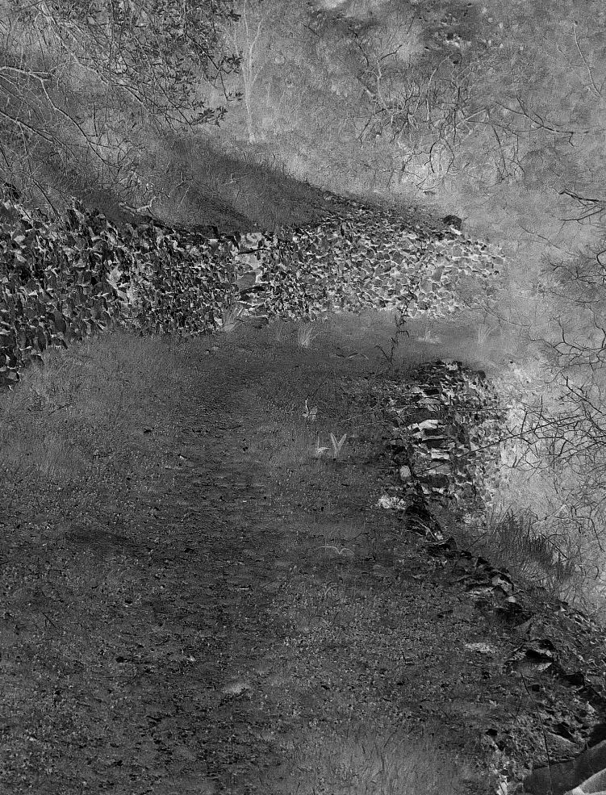

The Small Vast World: Abandonment and Revival of Terraced Vineyards in Salamiou, Cyprus
The Journal of Terraced Landscapes volume 1, issue 1, pp. 106–133 (2020) · Cite this article
- 256 views
- 235 downloads
- DOI10.5281/zenodo.5840379

Abstract
his paper examines a temporal terraced landscape area, in order to acknowledge its potential, and above all, its historical validity. For, when focusing on production generated on terraces, this in itself generates a particular kind of discourse prioritizing 'being' (e.g., drystone constructed objects, quantitative products) over 'becoming' (i.e., involving a process). It also privileges what is distinct (diverse material outcomes) over what is shared (similar technics) (Catapoti-Relaki 2016). These dialectical concerns are faced primarily by Cypriot architects, planners, but also farmers working with historic terraced landscapes. Yet, while being exclusively densely parcellated privately owned land, the wider landscape is perceived as open, quasi-public space and as of 2018, intangible heritage.
Scant writings about contemporary architecture on terraced landscapes, (Peter Zumthor's zinc museum deferring to the Swiss mountain setting perhaps comes to mind), means that in order to observe a wider landscape ensemble, investigative tools must be borrowed from relevant sciences, particularly archaeology. These might help to untangle contesting dialectic dynamics in order to envision new, convivial compatible spatiality. In other words, introducing the notion of technics as 'poesis' (Heidegger 1977), as a way of thinking, being in, and engaging with the world.
Agencies which contest, converge and dialectically antagonise each other, affect our scantily documented understanding by which the qualities of such landscapes have evolved. By observing the very shaping of history as evolutionary, by understanding the scale accommodating convivial use, re-use and abandonment, perhaps we could think of new '(r)evolutionary' interpretations (Catapoti-Relaki 2016); ones that attune to safeguarding the future of the terraced landscapes by prioritizing their 'becoming' over their 'being'.
Keywords
- drystone terraces
- conviviality
- synergies
- ensembles
‘To yield a space whose meaning lies not in the natural elements that compose it but in their extensions and correlations inside us to our farthest limits’ 1
1. Introduction
The topography of Salamiou
Salamiou is located in the south-western district of Paphos in Cyprus, 37 km east of Paphos town. The village nestles on the south west at an altitude of 680 m. above sea level, below the Troodos mountain range (1900 m). It appears on its own hilly perch, whose sides are hatched by many seasonal torrential rivers and streams, and it overlooks two river valleys on its east and west. Farmed terraces are situated on higher slopes, with lands extending into the flat alluvial plains towards both rivers which traverse the lowlands below. The lands of Salamiou encompass about 38 hectares of cultivated or abandoned terraces, interspersed on small private holdings (Figure 1). The open topography on all sides of the hilltop settlement gives the village an appearance almost like an island within an island. To the west is the Xeros, a torrential river with a plethora of medieval heritage. To the east, the vine terraces slope towards the Diarizos river and the medieval stone bridge of Chelefos, linking Salamiou to an ancient road network with the central part of the island, and particularly with the 19th c. colonial harbour in Limassol town from where all exports were made when the harbour was established.
Thoughts on diversifying
Looking for resilient traces surviving in a pre-colonial landscape dominated by colonial development (considering both British and Ottoman phases as loosely 'colonial', from the 16th to mid 20th c.), could provide contemporary ideas for ways to curate today's largely abandoned terraces in the overlooked wider lower mountain landscape, by introducing new specialised activities. Encouraging the growing of specialised species is one such idea (Gennadios, 1896, II, 20-37), where maximum quota may not always necessarily be a possibility, particularly for vines given the narrow terraced historic terrain. Or, where the practice of re-parceling is detrimental to historic tracings. Stewarding the environment is another possibility, with interacting educational workshops, health benefits, leisure and sports. All of these however need to address preserving the landscape in a way that transforms the way we use it.
2. Approaches
Methodology
Terraced landscape evolution in the locality of Salamiou village, the third largest arable landholding of the Paphos district, will be examined through selected historical sources and mappings. Linking these on a timeline establishes the historic significance of the anthropogenic landscape, resiliently shaped for almost 7000 years through uninterrupted convivial farming history (Given, 2018, 74). Conviviality can define possibilities for regenerating the terraced landscapes, in keeping with their scale, limitations of topography, and by considering their original purpose. Yet merely by looking at the quintessential qualities of terraced landscapes, it is almost impossible to date them, and very little has been written about the island's lower mountainous hinterland. By examining landscape reconfigurations in situ and linking these to available sources, interesting narratives emerge that 'thicken' our understanding about extant terraces or their surviving traces. By recognising the historic significance of particular terraced landscapes as providers of uninterrupted subsistence through a bottom-up approach rather than monumentalising them, possibilities emerge that may offer meaning and sustenance both for preserving their agrarian significance but also their continuity - as regenerated farmland, aptly enriching contemporary experiences with alternative reconfigurations; through stewardship, curating, or even rewilding. In an ever-changing dynamic of human/nonhuman relationships, interactions, and interdependencies, a layered approach of recognising and linking different categories of intervention can further valorise terraced landscapes as historic artefacts of a 'living, open-air, ecological, historical museum'. One dealing not only with human history but also, its natural history. Given the building boom of the island where the dichotomy of 'land' value is built into governance to exclude any validation of 'landscape', such an understanding is vital, particularly when it challenges the human vs nature dichotomy (Harrison, 2015).
A variety of activities undertaken by a family living in a terraced landscape community will next be examined, by observing their commitment and investment into their own topos. Rooted in rural traditions of their forefathers, but with a will for innovative engaging with the terraced landscape, they are expanding their vision to include possible alternative uses. These include not only farming but working with preservation, reviving stone building techniques and investing in valorization programmes that are promoted by multiple government agencies: historic building reconstruction, agro-tourism, terraced landscapes conservation, viticulture and wine production. The family find themselves however on a crucial crossroad; of where they are to take production, and the fate of the landscape around them, in order to stay solvent.
A third axis will crunch some numbers concerning wine production promotion, particularly on terraced areas, compared to other agrarian production. Comparing wine and agrarian produce as gross domestic products, the cost of investment affecting the landscape compared to returns examines whether large scale viticulture is viable in the long term, or what its consequences might be, both short- and long-term.
Sources
The Ottoman tax inventory of 1572 (Hadjikyriakou, 2018) provides information on taxed produce, giving us an idea of surplus productivity at the end of Venetian rule, documented at the onset of Ottoman governance. This will be examined in some detail revealing social aspects around taxed production, while a very general comparison will be made with another low-lying village, Potamia and its abandoned hamlet Ayios Sozomenos, located in the Messaoria plain, known as the 'breadbasket' of the island. Purely as a contrast of topography to Salamiou's hilly terrain, but also as a comparative base-line, both terrains appear different, but culturally, these villages bear similarities that governed their fates throughout history. Both villages are bordered by rivers and watered by numerous springs and constructed water courses; they are known to have been settled from at least 6000 BC from nearby remains of archaic settlements; they have been uninterruptedly farmed since antiquity, with possible links to the Roman road network crossing between Famagusta to the east and Paphos to the west; they were important feudal estates during French and Venetian rule during the 12th to the 16th c., producing cash crops for the colonizers. These villages became prominent producers during Ottoman times, linked to the transport network termed 'kamilostrata', used by camel caravans. (Bekker-Nielsen, 2004, 205-206). A next attempt compares the 1572 tax data relating to Salamiou with the landscape in situ, and contrasts it to four British colonial sources that allow us an understanding of the area's development, after Cyprus became a British colony in 1878.
The first colonial source, Herbert Horatio Kitchener's 1882 Triangulation Survey of the island (Figure 2), locates terraces mainly to the west of Salamiou around Aeton Moutti hill, facing the Xeros river valley. This landscape mapping can be interpreted as the Ottoman precedent at its end of rule, documented a mere four years after British acquisition.
A second source, Panayiotis Gennadios's Agriculture Report (1896), discusses agrarian reforms submitted to the early colonial establishment. Gennadios, who had been educated in Geneva, and Illinois from 1870 to 1874, was invited to head the Department of Agriculture on the island, by the far-seeing colonial Governor, Walter Sendall. Gennadios devoted his time to understanding and augmenting local agricultural practice; he is known to have designed the ubiquitous metal plough, now on display in many rural museums; he was said to have been well liked by the farmers to whom he disseminated new crop varieties, tree planting and farming methods, including proposals for alleviating irrigation problems. He possibly also facilitated the introduction of a metal Noria wheel drum for such 'alakati' type irrigation wells which, by 1919, began displacing the wooden prototypes (Bevan, 1919,7).
The third source, W. Bevan's 1919 Agriculture Report, presents intensified imports of new cash crop varieties of fruit and vegetables that swiftly displace former local varieties at one stroke.
The 1922 colonial cadastrals, a fourth source, depict how terraced landscapes were expanded in the service of colonial administration. Their broader parcellation appears in stark contrast, with their monoculturally defined pattern of land boundaries, to formerly intricately narrow landholdings. These British colonial sources, set against the Ottoman tax census, provide a timeline-tool for understanding development in any rural area, dating from late Ottoman times to the end of colonial rule in 1960.
3. a Brief History of Salamiou and Dating of Its Terraces
Seeped in over 7000 years of farming history, many ancient settlements have been located in the adjacent area (Goodwin, 1976, 556). A newly uncovered terraced Neolithic huntergatherer site, north of Salamiou (Efstratiou, 2012), suggests that such new evidence, in the secluded upland area of Troodos with respect to archaeological sites in lowland and coastal areas, “...challenges the prevailing notion of the Cypriot mountainous hinterland [as] being a culturally marginal area" (Department of Antiquities, 2019). Salamiou also traces its roots to the synonymic ancient Greek town of Salamis located on the opposite east end of the island. Biblical references through local oral legend, ascribe thousand-yearold self-seeded olive trees that are located along terraced banks in the western foothills, as Apostolikes (Apostolic trees). Improbable as this may seem, locals believe that these trees descend from the time when Apostles Paul and Barnabas were said to have walked from Salamis to Paphos, eating olives along the way and spitting out the stones. Bevan (1919, 38) also describes locals calling 'Apostoliki' both self-seeding carob and olive trees. In the 13-16th century, Salamiou had also been a feudal estate of a Greek Orthodox monastery. The 16th c. Panayia tou Sindi monastery complex, on the western banks of the Xeros river below the village, imposes on the stark landscape with its architecture reaching unique Cypriot-Gothic craftsmanship (Enlart, 1899). Pre-industrial historic remnants such as water mills, aqueducts and other irrigation ruins belonging to the monastery define the low-lying landscape. They describe a prominent ecclesiastical feudal holding adjacent to a village of Francomati (peasants who were free of feudal bondage but who hired their labour).
Salamiou's population a century ago was 60 families while in the 1572 Ottoman tax census (Hadjikyriakou, 2018), the village population counted 100 Francomati, 93 male taxpayers, 10 bachelors, and 83 widows' households, all Christians. Tax was imposed on wheat and barley, (2,940 akçes2 , also known as aspers, weighing 90% silver). It appears that hilly 'Salamiyu' (with 43% of its households composed of women and children, to 16% of the low-lying villages of 'Potamya-Ayia Sozomeno') produced nearly double the grain in 1572 than the latter low-lying villages (taxed a total of 1,634 akçes). Perhaps at the turn of Ottoman capture, the plains would have been devastated from the war against Venice, also possibly accounting for the many widows in the upland villages, if the men had been conscripted to the Venetian army. The war would also have impoverished the low-lying villages which were also known to have been rife with malaria; but it could not have been much easier on the hilly hinterland.
Smaller taxes were levied for lentils, broad beans, bee hives, sheep, pigs (probably free range) and flax, which would have been grown in the fertile alluvial fields beside the Xeros river. Cotton was taxed at 3 kantars (about 135 kg) and 900 akçes in 'Salamyu', also surpassing the 600 akçes of lowland 'Potamya'. The contribution to production by widowed households acquires a more visual understanding when observed against more recent memories; oral records from Potamia recall cotton picking in the first half of the 20th c., as the predominant labour of women and children, picking behind their mothers in the fields 3.
Salamiou excels on the 1572 records, in the production of officially noted 'grape juice' taxed at 3,160 akçes (assuming that 'grape-juice' is a euphemism for 'wine', which would not have been formally acknowledged).
While terraces were known to antiquity, and mention is made of large exports of wine during crusader centuries (Hill, 2010), most probably grown on pre-Ottoman era medieval terraces, these appear as mere narrow traces, or strips for hand cultivation along steep slopes accessed only by narrow pathways. A third wave of Ottoman terracing must have occurred from the 16th to mid 19th c, particularly when the great blight of the mid 19th c. destroyed French vineyards by phylloxera (Gennadios, 1896, p. 4-5). Aeton Moutti terraces in Salamiou probably belong to this time. Despite fertile lowlands being favoured for production during later Ottoman times, attested to by numerous church properties and chiftliks (rural holdings), mountain terraces would become a new source of taxation, but would have been initially exempt, in order to encourage their swift construction. However, Ottoman era terraces are mentioned as being created quickly and with not enough stability (Gennadios, 1896, 5). The third phase of terracing followed British colonial administration after 1878. Presumably these were constructed to a better standard and greater width, allowing plowing by oxen (Bevan 1919, 8). Gennadios (1896, 4) was against intensive vine growing on the island. Bevan (1919, 4, 27) repeats Gennadios’s opinion, that ‘cultivation of the vine in Cyprus [is] indisputably unprofitable’, yet in subsequent decades, colonial authorities intensified vine plantations. One witnesses in Bevan barely a passing interest of what local farmers planted before. Were farmers concerned about substituting new varieties, for example ones that needed more water (e.g., ‘wet’ cotton) to their older ‘dry’ varieties which did not need irrigation? What about directing farmers’ time and funding to producing cash-crops instead of fodder and food for local consumption? Oral accounts from terraced areas even today echo tensions between local and imported varieties of wheat, differentiated as ‘Sitari to topou’, (local corn, favoured for its flavour in baked bread) to bread made with imported grains. And what of the as yet extant cultivation on the island, of woad blue dye from Isatis tinctoria, documented in detail (Gennadios 1896, II, p. 22-25)? Its production had become obsolete 23 years later when indigo, supported by colonial authorities in Egypt, had established itself on the international market. Or yet, Bevan’s note that in markets of the time, there was a distinguished flavour to cheeses and butter made of the milk of flocks grazing freely, enhanced by the wild herbage that grows along naturally irrigated terraces. (Today such cheeses are niche-products, sometimes encountered but never encouraged). We only have Bevan’s account for what he terms ‘local reluctance’ to the introduction of new species, which may possibly also have inadvertently become hosts for all kinds of diseases and pests on newly introduced varieties (Bevan 1919, p. 23-27).
In 1922 cadastral mappings, Salamiou's emergent colonially subsidized terraces can be seen extending along private plots to the north and the Diarizos river valley east and south-east. In stark contrast to both these and the larger church holdings, remnant private medieval narrow terrace strips on the cadastrals speak of small amounts of produce, but probably a large variety, indicating domestic self-sufficiency for these owners. Newer private terraces encouraged by colonial authorities in under half a century, appear broader and more uniformly laid out, along wider contours. Their expansion appears to engulf former narrow landholdings. Systematic mappings and colonial records of the late 19th to early 20th c., indicate increased cash crop production with the aim of promoting exports and revenue, largely to pay off colonial acquisition debt, but also to supply the growing number of British troops and staff located in Egypt, primarily at Alexandria (Bevan, 1919, 27, 32, 37), 360 km south of Cyprus. Colonial wine production and export is a vast topic in itself, and will not be examined further.
Conceptual historic layering helps us to understand a landscape's intimate scale, as 'topos oikeios' according to Theophrastus, which modern ecologists might term a niche locality (Hughes, 1985). Niche localities reveal resilient complexities and 'convivial' development beside natural uncultivated territory. A bottom-up approach can prioritize small scale terrace activities when such references are extracted from dismissive fragmentary observations made in passing, in historic sources. On site, overlooked medieval precolonial terraces are observed in narrow abandoned tracings etched on steep slopes, which have today been overrun with wild vegetation. Often, although known to have provided livelihoods well into the 20th c., they are engulfed by more recently abandoned wider terraces of the colonial 19th to mid 20th c. This makes identification of development and recession tricky.
Pre-colonial or earlier historic terracing that has survived into the 20th c. has thus far been largely ignored, particularly also by British colonial authorities for whom production prejudiced increased productivity for export. All too often today's enterprising visions of constructing large scale intensive vineyards, can in one way be seen to succumb to interpretations of colonial narratives that denigrate 'lesser' (yielding) varieties, and their narrow steep terraces, dismissed to a 'spent past' just as the colonial authorities had done. Privileging industrial-scale monocultural development through contemporary investment projects, replicates colonial production intentions, ensuing in irreversible consequences. These disfigure convivial terraced landscapes, before even examining how this plethora of small intrinsic holdings fed and sustained livelihoods of local communities. Such reconfigured landscapes are alarmingly becoming more visible. Yet recorded product surplus surprises us when we read that Cyprus assisted in feeding neighboring crusader states in the Levant throughout the 12th and 13th centuries, supplying them with food-parcels and grain (Runciman, 1952 Vol. II). Stressing also that Ottoman taxation as described above was on surplus production, including cotton, wine, silk, leather (Hadjikyriakou, 2018), but also perfumes.
4. SALAMIOU'S TERRACES IN POST BRITISH COLONIAL TO RECENT HISTORY
By 1960 Salamiou's population numbered 810 (Goodwin, 1976). Prior to the 1964 intercommunal conflict, Salamiou acquired certain urban features such as the area's only open-air cinema, constructed in 1963, on broader terraced land skirting the settlement’s edge. The cinema, an evolved social and spatial novelty, barely screened twice before it was closed, after intercommunal killings ensued between Greek and Turkish Cypriots of surrounding villages. The cinema owner's son recalls his father going bankrupt, unable to repay his loans - replicating fates of the time of farmers in the area, when mass emigrations followed the conflict. But while farming continued out of necessity, the cinema remained abandoned for 39 years, its role as emergent social space a vanished luxury.
During the early 1990ties, when island investment prioritized coastal tourism, the Panayiotou brothers moved inland to establish their building company 'Amfiaraos', specializing in historic stone building restoration, and (re)construction of drystone terraced walls. They also revived their inherited terraced vineyards at Lakria locality, south-east of Salamiou, by upgrading cultivation of older vines. While adhering to the traditional cycle of viticulture supplemented by stone-building in off seasons, they also established Lagria, their state-of-the-art family winery in 1991. Since then, more extended family but also a wider circle from the community have also become involved in these activities. However, enterprises have not only focused on profit, but also on expanding services within their community; for example, by providing a senior care-at-home service, through matching community investment to meet government sponsorship.
By restoring traditional cottages, the family have also branched into renting for agrotourism. They operate a cafe-restaurant in sensitively restored historic buildings, providing space for workshops and events. In 2016, the wife of one of the brothers, founded 'Terract' (a composite of 'Terraced Landscape- Active Participation-Interaction'). In 2019, Terract hosted an educational drystone terrace workshop (Lambis, 2021), while further activities include nature trail walks, historic tours of the wider area, even scenic wedding planning. Village revitalisation activities have also encouraged the cinema owners to repair the historic carbon-rod cinema projector and 'Animafest', an open-air summer animation festival is annually hosted, drawing a specialised crowd to the village. Music events in the restored courtyard of Sindi monastery also attract seasonal culture and tourism to the area (Petropoulou, 2017).
The challenges this family faces, concerning historic preservation restoration actions, viticulture and terrace maintenance, running the winery and hospitality services for agro-tourism, reveal their collective vision as well as their pragmatic approach. They avail themselves of government programs to promote, sustain and develop rural agriculture and tourism. For the past 30 years, the Panayiotou family have been developing their own grass-roots initiative, as stewards and keepers of their area, aiming for balance between past and present.
However how all of the above is held together and made financially viable requires a new conceptual territorial master plan for the rural hinterland, on a national level. It has become vital to co-ordinate often conflicting aspirations of government incentives dispersed among various ministries, by clearly defining how rural historic terraced landscape areas should be maintained, preserved for the future, and used in the present. With subsidies ranging in scale, lower-end terrace preservation subsidies clash in intent with larger scaled ones encouraging viticulture or solar panel installations on large-scale levelled terrains (Figure 3). Some of the decisions of the Panayiotou family and their community come at odds because of such funding discrepancies. Making their own conclusions as to what works best as they go along, long-term preservation is not always apparent to other community members who may appear distrustful when unable to see a wider picture. In certain respects, government support (including the Deputy Ministry of Tourism as well as universities), should be doing more to assist. Even though Cyprus terraced landscapes have been inscribed in UNESCO's Representative list for Intangible Cultural Heritage of Humanity since 2019, (Theodosiou-Pitta, 2019), conservation has barely begun, with terraces island-wide revealing degrees of collapse that is largely left unrepaired (Figure 4).
An urgent involved debate is needed, envisaging how such landscapes, beyond partial monumentalizing of selected parts, will safeguard that transformations on how they are used, taking care that any vision of their conservation and restoration does not in fact irreversibly convert them into something they never were.
Starting from the premise, that the historic scale and traces of human intervention that informs the landscape terrain of the distant past have so far been overlooked, they need to become a part of our understanding (through documentation, research, publications, Lidar mappings, quantifications and meaningful insertion into current economic debate). Initiative has already begun, (Symons, 2011) and some terrace rehabilitation workshops are held by the Cyprus Institute 4. However, long-term regeneration needs an orchestrated effort to restore what remains and re purpose it for not only specialised production, but also education, leisure, health, knowledge, even art. A second bundle of questions will have to be addressed as to what will this new perception of terraced landscape look like? How will these new convivial relationships work?
5. Contribution of Agriculture and Wine Production to the Gross Domestic Product
Next, by looking at the landscape through quantifiable economic rationales, we can compare to what extent the benefits returned are, of subsidies favouring landscape use for intensive monocultural viticulture, compared to long-term benefits of alternative convivial development. But proof of dangerous precedents from former short-term business models needs to be factored into large scale entrepreneurship. Equally, when balancing against a convivial rationale, the latter should not be assessed in isolation, on production quotas alone, but augmented with accumulated potential benefits of additional heritage funding incentives, health and leisure investment but also diversification of special products.
In 1919, the land on the island 'susceptible of cultivation' was 320,000 acres (129,499.406 Ha) for a population of 275,000 inhabitants (Bevan, 1919, 4-20). The distribution of vine growing areas was concentrated in four localities around Troodos mountain summit, and along the lower eastern chalk hills. Cereals dominated all lowland farming. There are no statistics for cheese in 1919, although today the lower mountain slopes concentrate village production of the ubiquitous Halloumi for local markets, while urban commercial production grosses 4.7% of export revenue 5.
From the top ten list of Cypriot exports for 2018, vegetables are the last, with a $52.6 million value, (€ 43.2 m) or 1.1% of exports. Eurostat6 cites Cypriot wine exports at € 2.57 m while imports of wine are 10 times more (€ 25.6 m). Therefore, it is clear that whatever the effort and expense, intensive wine production through mechanically flattened terraces can only be considered a marginal product of negative value both to the landscape and concerning investment return, to the negative tune of € -23m.
Species of most common vine varieties
Bevan (1919, 29) mentions 17 varieties of local vines of which 'several were to be found only in private gardens'. Four of these, colloquially termed Mavro, Opthalmo and Maratheftiko (reds) and Ksinisteri ('aspro' or white), are over a century old and have persevered. Of the seven imported varieties Bevan mentions, only Alicante is still extant 7.
Since 1960, Mavro and Ksinisteri covered about 75% of total plantations (Koundouras 2011). Since 1960 also, the Viticulture and Oenology Branch of the Department of Agriculture was founded under the Production Branches Sector. Their aim is to contribute as much as possible ‘to the achievement of the strategic objectives mainly of the wine sector, as well as alcoholic beverages8 and to expand dynamics of diversity’. In the 1970ties, various varieties were imported from European oenological providers. Unfortunately for the time, the price-quality ratio of grapes was not differentiated and more productive varieties of less quality such as Carignan Noir, Grenache Noir, Palomino were established. For the last 25 years however, prices have been adjusted for grapes of better quality and Cabernet, Shiraz, Merlot Noir, Chardonnay, Riesling, Sauvignon and Semillon have been introduced 9.
The indigenous historic varieties have become firm favourites, because of their adjustment to local microclimate conditions. But Ksinisteri, (colloquially also called 'Oksino' or 'sour') requires further development since alone, its aroma is considered bland and needs enhancing. It is nevertheless a white wine which matures well, with many small wineries refining it to excellent results.
The dark Mavro vine, from which the dessert wine Commanderia is made, (of Crusader era fame), adjusts to all soil types but produces a neutral pale coloured wine, unsuitable for ageing beyond 2 - 3 years. Despite this, at suitable conditions, Mavro can produce wines that are evenly balanced, with a fuller body, color and nose. Ophtalmo or Voophtalmo (Ox eye) is another red variety, mentioned in 1919 and found particularly in the Paphos district, in scattered vineyards east of Salamiou. It subjects itself well to ageing with a very satisfactory colour, a discerning somewhat strong aroma, and very low acidity.
Lagria winery has worked since 1980 with 'Aspro' and 'Mavro' varieties. Their philosophy is to amass a stock of aged wines, selling only 20-30% while retaining 70-80% to build up a reserve. Since 1990, they have been using Mavro for red wines and a naturally sweetened sun-dried Commanderia (named Foinike), which can be drunk fresh. Both red and white varieties are also used for Zivania, a clear raki spirit. In 2019, Lagria put 60,000 bottles, aged from 2010-2011, on the market. Two years ago, a chance sale to China, absorbed their 2006 matured wine.
Lagria uses Ksinisteri and Ophtalmo for rosé wine, with a 10% of Martheftiko grown on their terraces, to enhance colour. They also produce white wine from black grapes, a recipe inherited from their mother. Since 1990, Lagria and other local producers also work with Cabernet Sauvignon, Cabernet Franc, Mataro, Palomino, Shiraz and Oilate; but for these new varieties they are mechanically levelling subsidized large-scale terraces, in essence reconfiguring the landscape and wiping out former terraces.
Conviviality is demonstrated between vine varieties, soil type, terraces and human social organisation, as expressed in human preferences for particularly flavours and aromas, while a large number of traditional products are also made from grapes. Ophtalmo, Ksinisteri, and Mavro are used for sweets and sold locally, but these wonderful products have not received attention and some are increasingly difficult to find in cities: Palouze, a wobbly grape jelly; Soutziouko, a jellied firm ‘sausage’ of grape juice laced with whole almonds; Kiofteri, a hardened sweet grape-gum that is cut into energy bars; Epsima, a condensed grape syrup used to sweeten jams, pastries (or muesli). All use no sugar additives, relying on the grapes’ natural sweetness. Mavro is also traditionally used for raisins.
Problems associated with the cultivation of terraced vineyards; strengths; weaknesses; threats
Many of the abandoned terraces we witness today crumbling in the rural landscape, are in fact a remnant legacy of colonial capital investment. Their mapping and colonial recording has itself privileged a 'monocultural' source of historic information. Knowledge of these records has seeped into oral memories of elders, who can mostly recall only what already exists in colonial archives. Contrastingly, some scant information is emerging, concerning medieval fruit production (Weaver, 2006).
Interestingly, private daily food production is still practiced, particularly in the mountain areas, where families supplement their diet with indigenous products by adhering to surviving remnants of timeless practices.
The darkest, most precarious moment of the island's terrace history must have been during 1988-1998 when industrial coastal wineries monopolized the price of grapes, buying from small landholders, but enforcing compulsory share quotas and rigid delivery timeslots. This prompted small vine growers to intensify picking days before delivery, piling grapes into lorries merely to be able to meet factory appointed deadlines. Quality inevitably slumped, chemicals were added to kill mold, and the government, unable to decentralise the industry, uprooted vines through EU funding, to lessen production. This led to the most intensified terrace abandonment in recent history, the consequences of which reverberate in rural but also urban environments until today (in Limassol, demolitions of historic buildings along roads widened for the passing grape-laden lorries have left their indelible mark).
It is furthermore telling of top-down administrative conservation prioritizing, that of the periods under French-Venetian rule (1191-1570), the only agrarian remnants to have been designated primary category antiquities (owned and funded entirely by the state), are sugar mills (even though sugar production lasted a mere 300 years (Given 2018). Contrarily, water-powered flour mills, numbering in their hundreds, and located near villages all over the island and particularly in lower terraced areas, utilise a similar smaller horizontal turbine technology to that of sugar mills, but are designated second category antiquities even though many belong to the same period. Some having ground grains, for over 800 years and have only ceased functioning during the mid 1960ties. Corn mills are mostly privately owned, and receive less than half the restoration costs in funding, but require a complicated and expensive research procedure that owners must follow. This is often far above their financial or expertise capabilities. Stringent rules apply, and mills that successfully receive licenses are restored, but via tendering in the private (subjectively specialised) sector. It is no small wonder that very few mills, numbering in the tens, have been adequately conserved in the last half century; it is also not difficult to extrapolate that time is running out. As recently designated UNESCO intangible heritage, terraces also face similar problems to that of mills, but with even less funding.
Another political issue limiting research into the 450 year-long agrarian topography of Ottoman times, is possibly because of the still unresolved conflict with Turkey. Research thus tends to focus on preceding or subsequent colonizing agencies privileging their activities, particularly when discussing British colonial production for which more written sources exist. Contrastingly, we know almost nothing about terraced Turkish Cypriot vineyards in the Troodos range. These were abandoned during 1974 population exchanges, further limiting our access to the people and their intimate knowledge of their own history. Today government terrace subsidies come from the Agriculture Department (for viticulture), and Urban Planning, (for terrace maintenance). However, Agricultural Department funding is mostly used on mechanized terracing which is appearing on an alarmingly unprecedented scale, disfiguring large swathes of denuded ground cover, blighting the landscape. Oversized machine cut rocks also introduce disturbing-looking terracing. The change in disfigured field scale is witnessed on aerial images of the Department of Lands and Surveys (Figure 3) as well as on the ground (Figures 5 and 9).
Precarious approaches of maximising exploitation solely for profit include flattening terrain to fertility diminishing depths and subsequently relying on fertilizer, on imported varieties, on chemical spraying, even on chemically processed wines that can lessen required maturity time. This questions how traditional boutique wineries are to be protected or whether chemically dependent wines should be coined 'imitation wines' since they are not currently distinguished on the market from wine that is produced by conventional terraced farming procedures. Aggressive machine-aided terrain flattening is also favoured by solar investment enterprises. This new threat has also destroyed huge swathers of forest, and thousands of years of historic landscape, before anyone has had the chance to propose economic rationales of regeneration based on heritage significance. In areas such as the Karkotis valley, centuries of knowledge embedded within the landscape is being erasing physically on church owned land, but also from mind and memory. The automatic assumption that production growth is an end in itself unwittingly replicates colonial indifference to the oikios topos.
While recent publications on terraces rush to document an impressive variety of vanishing structures (Theodosiou-Pitta, 2019), their objectification as individual structures need to be addressed within the larger engagement with the landscape itself. Instead of objectifying the terrace structures as finite structures in the landscape, we need to safeguard them as processes, composed of ensembles of different actions holding them together. These would then be understood as possibly changing over time but in a sustainable manner. When further observing the terraces as being a part of technical ensembles - a chaîne operatoire emerges (Leroi-Gourhan, 1993), where varying structural techniques are at the same time both aesthetic gestures in the landscape and tools working in synergies (e.g., one of many operational sequences could be how terracing retains rainwater and flow is slowed down, providing sustenance for plantations in dry seasons, but how it also sustains a habitat of wild vegetation, fungi, molds, flora and fauna, growing both on the stones, and in the crevices.
These gestures cum tools, when organized in sequences offer a syntax which historic landscape architecture needs to both codify in order to preserve terrace development, and promote sustainability. Such a syntax may provide opportunities for reviving existing operational series which have provided the landscape for centuries with stability and flexibility, allowing perhaps, an insertion of new convivial syntax (Figures 7 and 8).
6. Conclusions: Future Prospects and Feasibility Proposals
My involvement in the area arose through documentation assignments for the Historic Preservation Department but also historic building restorations for private clients. This coincided at the time Amfiaraos were setting up their building practice. An anthropological interest in their activities inevitably ensued, but with the limitations imposed because of the primary task of other historic preservation assignments. It is thus only over time that an amassed amount of non-systematic field research revealed the need to observe the wider picture and to envision a more holistic approach to mitigate effects of a monocultural profit oriented end product and look instead, at the value of assemblage, knowledge, landscape and process (Figure 9).
We are called to envisage the ‘existence’ of a ‘new’ way of being, arising out of mutually reinforcing technical practices and material engagements that link the scale of individual decisions, to the larger scale of historical patterns. Stone terraces indicate the story of production and function as a memory device, providing us with an itinerary of a process through thousands of years of history. The particular agrarian landscape allows us to experience a way of being and engaging with the mountainous hinterland through different periods in the past. Given (2018, 88) argues that using conviviality as a conceptual framework, enables us to understand processes of relations, balances, varying levels of resilience, tension, precarious alliances, as interconnections across whole ecologies and not just of environmental factors but also those particularly relevant to the impact of particular practices.
How a convivial approach to curating terraced landscapes can become subjectively meaningful to a wider audience while sustaining livelihoods is one of the challenges facing Salamiou and other such communities. Whether these will succeed in bequeathing to their offspring a historic landscape with a sustainable future that will benefit them and the wider island as a whole is not secure at this present moment in time. To succeed in establishing a sustainable future not only in one community but in a network extending throughout the country is an endeavour which needs planning and vision. Strategies are required to redefine the significance of terraced landscape, to include soil, vegetation and water. But the value of agrarian conservation toil must also be recognised. Stewarding the environment through conservation practices in cases where historic terraces can still be used, or where restoring abandoned terraces can preserve them as protection against erosion needs to be quantified and budgeted into subsidized and financially viable planning. But even stepping back cultivation and 'curating decay' with rewilding, requires remuneration for the value of the work input required.
Controlled rewilding coupled with terrace conservation is not to be seen as a goal but a process, while maintaining varieties such as olive trees and carobs, that would otherwise vanish if they were not cared for. A carefully orchestrated balance of conserving terraces, is required, to manage them through material conservation and studied rewilding, until a time when they can be utilised for some form of specialised productivity. While the forestry department curates and caters to conservation of large tracts of forest landscape, (Figure 6), rural landscape also needs a similar institution of administrative care. Examples from elsewhere have introduced traditional hay-making for organic animal feed, planting wild varieties such as vetch for organic animal feed, adding reasons for accessibility to drystone terraces and their conservation. Such actions justify and promote clearing of paths that can be interwoven with the national trail of hiking and cycling for health, sport and recreation. Equally, monocultural agriculture on terraces should eventually give way to increased variety that the terraces were originally built for.
Hildyard (2019, 8) mentions Defra's (Department of Environment, Food and Rural Affairs) in a post-referendum vision for British farming as a diversified public service, where farmers will receive payments for stewarding the environment, for providing health and wellbeing resources such as school trips, or social prescriptions. She assesses that the idea is to protect livelihoods and food security by keeping farming going, but to (also) to improve public health and the environment by transforming the way it works. Preserving terraced landscape in keeping to its scale, requires an understanding of the inherent value of place as topos; its human traces, centered on empathic, materially-mediated experiences of the everyday - particularly of joy, love and happiness, emotions which are rarely encompassed or made visible through the frame of heritage (Ireland, 2017). Yet concern with continuity effecting experience and emotion rather than representation, and with the vibrant materiality of objects, flora and fauna in situ, rather than exhibiting them through representative collections, links to a scholarly shift in interest, where possibly, the shift might also be made from what terraced heritage might mean, to what it might do.
References
- Bekker-Nielsen, T. (2004) The Roads of Ancient Cyprus. Copenhagen: Museum Tusculanum Press, University of Copenhagen, Narayana Press, pp. 208–205, plate 22.
- Bevan, W. (1919) Notes on Agriculture in Cyprus and its Products. http://www.hellenicaworld.com/Cyprus/Literature/WilliamBevan/en/NotesOnAgricultureInCyprus.html.
- Budds, D. (2016) Rem Koolhaas: “Architecture Has A Serious Problem Today”, innovation by design. https://www. fastcompany.com/3060135/rem-koolhaas-architecture-has-a-serious-problem-today
- Catapoti, D.; Relaki, M. (2020) Why the Neolithic is (r)evolutionary, Journal of Material Culture, 25(3), pp. 289 –308. https://doi.org/10.1177/1359183519894012
- Press Release: The Archaeological Mission of the Aristotle University of Thessaloniki in Cyprus, A newly discovered Aceramic Neolithic site in the Troodos Mountains (2019) Department of Antiquities Report. http://www.mcw.gov.cy/mcw/DA/DA.nsf/d49133d713b3ff4fc22576c70031d30e/93BD- 9B72643A9900422577B20039DFE2/$file/2019(a)_Agios_Ioannis_Vretsia_en.pdf
- Enlart, C. (1899) Gothic Art and the Renaissance in Cyprus. London: Trigraph, p. 509.
- Eurostat (2021) Cyprus wine exports. https://in-cyprus.com/eurostat-cyprus-wine-exports-at-e2-57m-imports-ate25-6m-in-2018/
- Evstratiou, N. (2012) Early Cypriot prehistory in the light of recent developments, in Studies in Mediterranean Archaeology, CXXXVII, Upsala, pp. 33–41.
- Gennadios, P. G. (1896) Report on the Agriculture of Cyprus, Parts I, II and III. Nicosia: Government printing office, Foreign and Commonwealth Office Collection.
- Given, M. (2018) The Precarious Conviviality of Watermills. Cambridge: Cambridge University Press. pp. 79 - 85.
- Goodwin, J. C. (1976) A Toponymy of Cyprus. Nicosia: Cyprus College.
- Hadjikyriakou, A. (Ed.) (2018) Islands of the Ottoman Empire. Princeton: Markus Wiener. https://medins.ims. forth.gr/publications.php
- Hadjisavva-Adam, I. (Ed.) (2007) Drystone Constructions of Cyprus. Zavalis Litho: The Press and Information Office for the Department of Town Planning and Housing.
- Harrison, R. (2015) Beyond “natural” and “cultural” heritage: toward an ontological politics of heritage in the age of Anthropocene, Heritage & Society 8, pp. 24–42.
- Hildyard, D. (2019) How bad can it get? Reflections on the state we ‘re in. London Review of Books 41/16. https://www.lrb.co.uk/the-paper/v41/n16/the-state-were-in/how-bad-can-it-get
- Hill, G. (2010) A History of Cyprus. Vol. 3, The Frankish Period, 1432-1571. Cambridge: Cambridge University Press. p. 187.
- Hughes, J. D. (1985) Theophrastus as Ecologist, Environmental Review 9/4, pp. 296–306. https://www.jstor.org/stable/3984460?seq=1.
- Heidegger, M. (1977) The Question Concerning Technology and Other Essays. New York: Harper & Row.
- Ιλιοπούλου, Ι. (Ed.) (2016) O Κόσμος ο Μικρός ο Μέγας! Του Oδυσσέα Ελύτη, με την μουσική του Γιώργου Κούρουπου. Ikaros Publishing.
- Ireland, T. (2017). Quotidian Utopia: Orhan Pamuk’s The Museum of Innocence and the Heritage of Love, Future Anterior 14(2), pp. 13–26. https://www.muse.jhu.edu/article/712834
- Κουνδουράς, Σ. (2011), 25ο συνέδριο Ελληνικής Εταιρείας Επιστήμης των Οπωροκηπευτικών (ΕΕΕΟ). https://web.cut.ac.cy/eeeo/25synedrio/
- Lambis, P. (2021) The sacred trees of Salamiou. Cyprus Mail, https://cyprus-mail.com/2021/12/19/the-sacred-trees-of-salamiou/ must be inserted into the bibliography on p. 128, above that of Petropoulou.
- Petropoulou P. V. Lagria R&B (2017) Roots and Branches. https://www.lagriarandb.com
- Runciman, S. (1952/2016) A History of the Crusades, The Kingdom of Jerusalem and the Frankish East 1100-1187, Vol. II. London: Penguin Random House, Cambridge University Press. p. 283.
- Symons, N.; Vassou, V. (2011) Report on the mapping of the Cyprus Cultural Landscape. Limassol: Laona Foundation. http://www.moi.gov.cy/moi/tph/tph.nsf/791AE2F93DA1D593C225811A003BEF76/$file/02_LAONA-RE- PORT_CULTURAL-LANDSCAPE-MAPPING.pdf Sugar, P. F. (1977) South Eastern Europe Under Ottoman Rule, 1354-1804. Seattle: University of Washington Press. Theodosiou, A.; Pitta, A. (2019) Rural Landscape: International Day for Monument and Sites, Petra stin Petra Foundation, p. 9-10, 30. Weaver, W. W. (2006) The Royal Garden of Pefkou, a study of fruit consumption in Medieval Nicosia. Lefkosia: Moufflon Publications. Maps used: Cyprus Topographical Series (1922), revised 1997, scale 1: 5000, Sheets 46/37, 46/36, 46/35, 46/28, 46/29, 46/30, 46/38, 46/44, 46/45, 46/46, Department of Lands and Surveys, Cyprus. Cyprus Water Department (2019) Aerial image with cadastral data from Department of Lands and Surveys (Source: https://wdd.maps.arcgis.com/apps/webappviewer/index.html?id=479ed86d25ed4e0aaa58875111e3397f&fbclid=IwAR3XQI42Q2O9f12ACR_UIxDWDoRGjB-4BwuuvwbO2AN4PA0FFVLmTaaNRpQ) Kitchener, H. H. (1885) A Trigonometrical Survey of the Island of Cyprus, Sheet 13. National Library of Scotland (Source: https://maps.nls.uk/view/103246409).
Rights and permissions
Open Access. This article is licensed under a Creative Commons CC BY 4.0 license, which permits use, sharing, adaptation, distribution and reproduction in any medium or format, as long as you give appropriate credit to the original author(s) and the source and indicate if changes were made.
About this article
Cite this article
Floridou, S. (2020). The Small Vast World: Abandonment and Revival of Terraced Vineyards in Salamiou, Cyprus. The Journal of Terraced Landscapes, 1(1), 106–133. https://doi.org/10.5281/zenodo.5840379
- Published
- October 2020
- Issue
- Volume 1, Number 1
- Journal
- The Journal of Terraced Landscapes, ISSN 2754-7612 (Online)
- Archive
- Zenodo record 5840379
- drystone terraces
- conviviality
- synergies
- ensembles